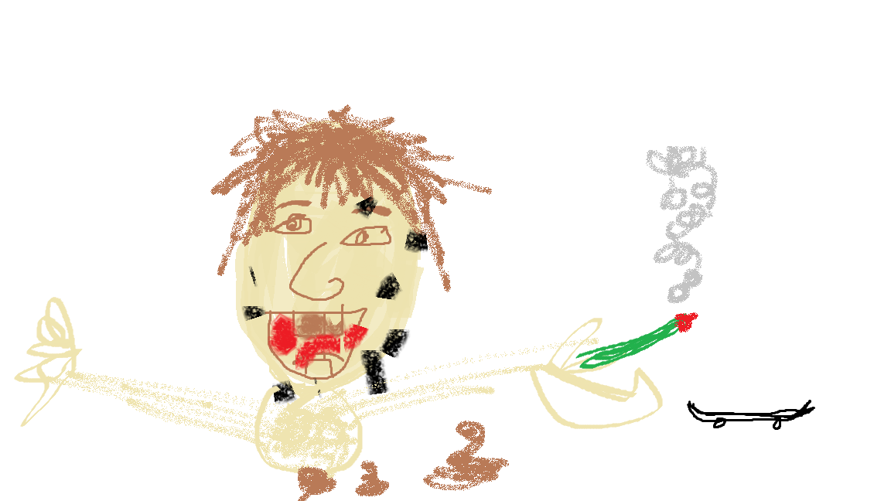

Obtain Mary Jane from the sketchiest man available.
Using your illegal Magnum .42, add a warm bullet to your dealer's head, making absolutely sure to leave immediately with a newly stolen bong.
Flee from police after a 45 minute chase that results in two cops dying in the result of head on collisions with the general public.
Peacefully return home and greet wife and kids!
PACK the thickest bowl known to mankind.
Equip your flame retardant suit.
Leaving your bong in the garage, lock all doors in abode, and exit.
Using as many matches as possible, proceed to ignite an enormas flame.
Watch as your house swiftly erupts into vicious flames and esperar until abode has become char.
Rush inside, carefully avoiding the bodies of your family, and make your way back towards the garage.
Snap the bowl in one swift inhalation ensuring all smoke from the home and bowl and charred bodies has entered your lungs.
Call local federal police station.
Alert department sherriff of the horrific accident that has just occured at Knickerbocker Administrative Center.
Inform police of the suspected perpetrator. Bryan Treat Bettencourt, Age 60.
Flee to rural Kazakh village, and ask for tribe leader Gauhar Surtayeva.
Introduce yourself as Prince Sire Harold Johntis Peterhiggirnstein of the 9-11th Eastern Governing Body of South-Western Kiribatian Controlled Nauru.
Ask for the ritual of great forgiveness, for which Tribe Leader Gauhar Surtayeva begrudgingly administers.
Enjoy your high!
